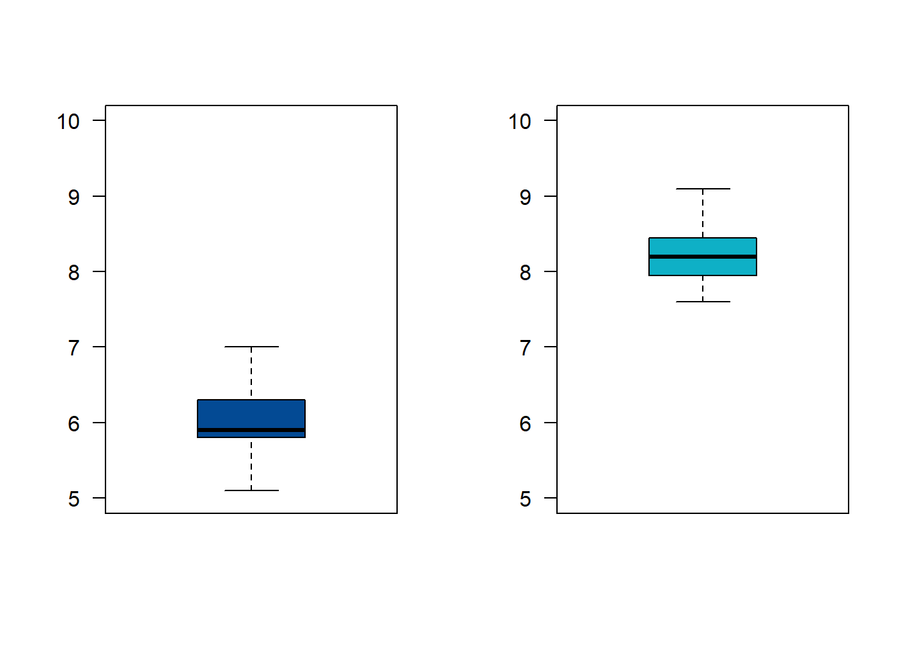
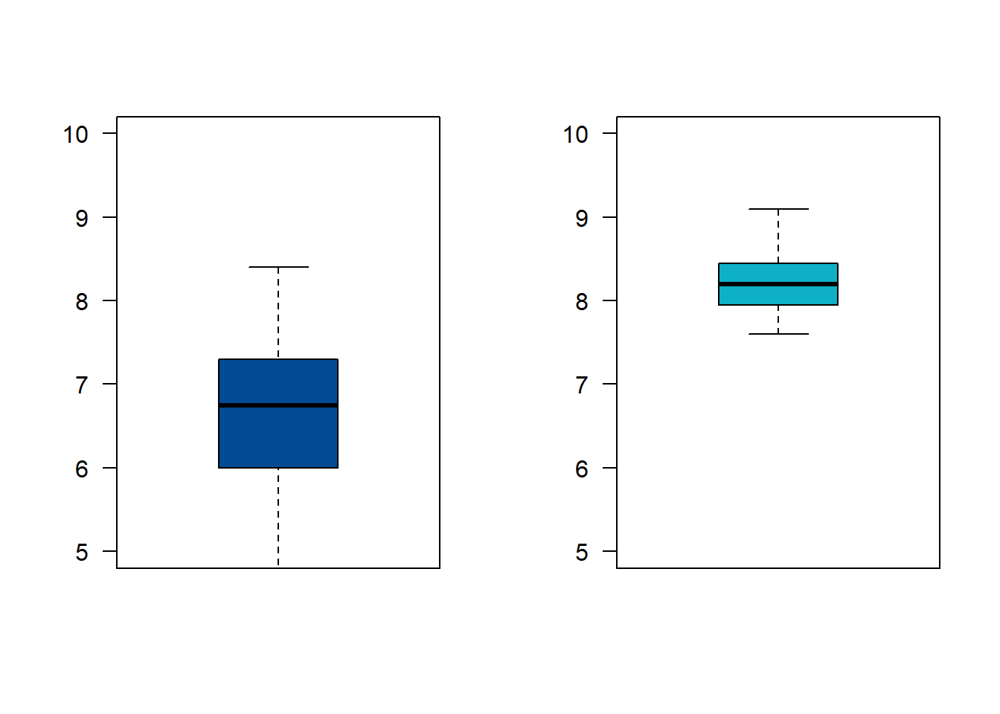

El director de un gimnasio requiere determinar si contrata o no a un instructor para su campaña de reducción de peso. Para tomar la decisión decide tomar un grupo de 16 personas que acuden normalmente para darle una oportunidad a un aspirante al cargo. Los siguientes datos corresponden a los resultados obtenidos para los pesos antes (pant) y pesos después (pdes) de un mes de participación en el programa. Utilice un nivel de significancia \(\alpha= 0.10\), para determinar si contrata o no al aspirante.
| pant | 104.5 | 89 | 84.5 | 106 | 90 | 96 | 79 | 90 | 85 | 76.5 | 91.5 | 82.5 | 100.5 | 89.5 | 121.5 | 72 |
| pdes | 98 | 85.5 | 85 | 103.5 | 88.5 | 95 | 79.5 | 90 | 82 | 76 | 89.5 | 81 | 99.5 | 86.5 | 115.5 | 70 |
\(Ho: \mu_{ant} \geq \mu_{des}\)
\(Ha: \mu_{ant} < \mu_{des}\)
pant=c(104.5,89,84.5,106,90,96,79,90,85,76.5,91.5,82.5,100.5,89.5,121.5,72)
pdes=c(98,85.5,85,103.5,88.5,95,79.5,90,82,76,89.5,81,99.5,86.5,15.5,70)
t.test(pant, pdes,
alternative = "less",
mu = 0,
paired = TRUE,
conf.level = 0.95)
Paired t-test
data: pant and pdes
t = 1.2736, df = 15, p-value = 0.8889
alternative hypothesis: true mean difference is less than 0
95 percent confidence interval:
-Inf 19.75467
sample estimates:
mean difference
8.3125 Como el valor-p ( 0.8889) es mayor que nuestro nivel de significancia (\(\alpha= 0.10\)), no se rechaza la hipótesis nula, no existe suficiente evidencia en la muestra que permita rechazarla. Se asume que Ho es verdad. Es decir que no hay evidencia que el programa reduzca el peso.
Una empresa desarrolla un curso de entrenamiento para sus empleados, formando dos grupos y aplicando dos metodologías diferentes de entrenamiento con el fin de poder evaluar que método produce los mejores resultados. El primer grupo (g1) esta conformado por 36 empleados y el segundo grupo (g2) por 40 empleados . Se puede afirmar que el método aplicado al segundo grupo produce mejores resultados que el aplicado al primer grupo ? ¿Que supuestos debe tener en cuenta?
| Grupo 1 | 6.8, 6.1, 5.8, 5.9, 5.8, 6.4, 5.7, 6.0, 5.9, 6.4, 6.0, 5.7, 6.5, 6.5, 6.0, 5.9, 5.7, 5.8, 5.9, 5.8, 6.0, 6.0, 5.8, 5.7, 6.1, 5.9, 5.2, 6.3, 5.4, 6.5, 5.5, 5.9, 7.0, 6.4, 5.1, 6.3 |
| Grupo 2 | 8.8, 8.5, 8.4, 8.5, 7.6, 8.7, 8.0, 7.9, 8.2, 8.0, 7.8, 8.6, 8.5, 7.9, 8.5, 8.3, 8.4, 8.2, 8.3, 7.9, 8.2, 7.7, 7.8, 7.7, 8.1, 8.0, 8.3, 8.2, 8.1, 8.3, 8.1, 8.8, 7.7, 9.1, 7.6, 8.4, 8.2, 8.3, 8.1, 8.7 |
grupo1=c(6.8, 6.1, 5.8, 5.9, 5.8, 6.4, 5.7, 6.0, 5.9, 6.4, 6.0, 5.7, 6.5, 6.5, 6.0, 5.9, 5.7, 5.8, 5.9, 5.8, 6.0, 6.0, 5.8, 5.7, 6.1, 5.9, 5.2, 6.3, 5.4, 6.5, 5.5, 5.9, 7.0, 6.4, 5.1, 6.3)
grupo2=c(8.8, 8.5, 8.4, 8.5, 7.6, 8.7, 8.0, 7.9, 8.2, 8.0, 7.8, 8.6, 8.5, 7.9, 8.5, 8.3, 8.4, 8.2, 8.3, 7.9, 8.2, 7.7, 7.8, 7.7, 8.1, 8.0, 8.3, 8.2, 8.1, 8.3, 8.1, 8.8, 7.7, 9.1, 7.6, 8.4, 8.2, 8.3, 8.1, 8.7)
par(mfrow = c(1, 2))
boxplot(grupo1, las=1, col=c2, ylim=c(5,10))
boxplot(grupo2, las=1, col=c3, ylim=c(5,10))
Iniciaremos con una prueba de hipótesis para la comparación de varianzas:
\(H_o: \sigma^{2}_{1} =
\sigma^{2}_{2}\)
\(H_a: \sigma^{2}_{1} \neq
\sigma^{2}_{2}\)
var.test(grupo1,grupo2)
F test to compare two variances
data: grupo1 and grupo2
F = 1.2975, num df = 35, denom df = 39, p-value = 0.4282
alternative hypothesis: true ratio of variances is not equal to 1
95 percent confidence interval:
0.6776032 2.5137013
sample estimates:
ratio of variances
1.297479 Como el valor-p (0.4282) es mayor al nivel de significancia (\(\alpha=0.05\)), no rechazamos la hipótesis nula, no existe suficiente evidencia en la muestra que permita rechazarla, asumimos que las varianza son iguales.
\(H_o: \mu_{1} \geq \mu_{2}\)
\(H_a: \mu_{1} < \mu_{2}\)
t.test(grupo1, grupo2,
alternative ="less",
mu = 0,
paired = FALSE,
var.equal = TRUE,
conf.level = 0.95)
Two Sample t-test
data: grupo1 and grupo2
t = -25.413, df = 74, p-value < 2.2e-16
alternative hypothesis: true difference in means is less than 0
95 percent confidence interval:
-Inf -2.072933
sample estimates:
mean of x mean of y
5.991667 8.210000 Como el valor-p (2.2e-16) es menor que el nivel de significancia, rechazamos la hipótesis nula, aceptamos como verdadera la hipótesis alterna. La media el primer grupo es significativamente menor que la media obtenida por el segundo grupo. Esto indica que el método aplicado al segundo grupo produce mejores resultados.
Supongamos que la empresa del ejemplo 5, desea comparar los resultados obtenidos por el grupo 2 con un tercer grupo externo con el fin de realizar una valoración adicional que le permita una visión más general de los métodos empleados
grupo3=c(8.4, 7.5, 6.9, 6.6, 7.0, 5.5, 5.5, 7.9, 6.9, 7.3, 4.7, 5.5, 6.7, 8.3, 6.0, 6.3, 5.5, 8.4, 7.1, 5.3, 6.9, 5.5, 7.2, 6.5, 6.1, 7.8, 7.4, 6.6, 6.8, 6.0, 6.9, 7.4, 4.9, 6.2, 7.3, 6.2)
grupo2=c(8.8, 8.5, 8.4, 8.5, 7.6, 8.7, 8.0, 7.9, 8.2, 8.0, 7.8, 8.6, 8.5, 7.9, 8.5, 8.3, 8.4, 8.2, 8.3, 7.9, 8.2, 7.7, 7.8, 7.7, 8.1, 8.0, 8.3, 8.2, 8.1, 8.3, 8.1, 8.8, 7.7, 9.1, 7.6, 8.4, 8.2, 8.3, 8.1, 8.7)
par(mfrow = c(1, 2))
boxplot(grupo3, las=1, col=c2, ylim=c(5,10))
boxplot(grupo2, las=1, col=c3, ylim=c(5,10))
var.test(grupo3,grupo2)
F test to compare two variances
data: grupo3 and grupo2
F = 7.2974, num df = 35, denom df = 39, p-value = 1.334e-08
alternative hypothesis: true ratio of variances is not equal to 1
95 percent confidence interval:
3.811031 14.137763
sample estimates:
ratio of variances
7.297388 t.test(grupo3, grupo2,
alternative ="less",
mu = 0,
paired = FALSE,
var.equal = FALSE,
conf.level = 0.95)
Welch Two Sample t-test
data: grupo3 and grupo2
t = -9.2548, df = 43.571, p-value = 3.781e-12
alternative hypothesis: true difference in means is less than 0
95 percent confidence interval:
-Inf -1.285811
sample estimates:
mean of x mean of y
6.638889 8.210000 En este caso tenemos una comparación de medias para grupos independientes con varianzas diferentes (como se muestra en el resultado de var.test).
Analizando el resultado de la prueba t-Student, el valor-p resultante (3.781e-12) indica que se rechaza la hipótesis nula, se acepta la hipótesis alterna como verdadera. Podemos afirmar que existen diferencias significativas entre las dos medias.
Una encuesta realizada a 100 usuarios de una tarjeta de crédito seleccionados aleatoriamente, 57 dijeron que sabían que empleando su tarjeta podían ganar millas de viajero. Después de una campaña publicitaria para difundir este beneficio, se realizo una encuesta independiente entre 150 usuarios de la tarjeta de crédito y 87 informaron que conocían el beneficio. ¿Se puede concluir que el conocimiento de este beneficio aumento después de la campaña publicitaria?
\(Ho: p_{1} \geq p_{2}\)
\(Ha: p_{1} < p_{2}\)
prop.test(c(57,87),c(100,150),
p = NULL,
alternative = "less",
conf.level = 0.95)
2-sample test for equality of proportions with continuity correction
data: c(57, 87) out of c(100, 150)
X-squared = 0.00068243, df = 1, p-value = 0.4896
alternative hypothesis: less
95 percent confidence interval:
-1.0000000 0.1033338
sample estimates:
prop 1 prop 2
0.57 0.58 Como el valor-p ( 0.4896) es mayor al nivel de significancia, no se rechaza la hipótesis nula, no existe suficiente evidencia en la muestra que permita rechazarla, asumimos que Ho es verdad. Por tal motivo no se perciben mejoras el conocimiento de los beneficios que trae el uso de la tarjeta de crédito. Se recomienda revisar la forma en que se realiza la campaña publicitaria.
| parámetro | prueba de dos colas | prueba de cola inferior | prueba de cola superior |
|---|---|---|---|
| \(\mu_{1}-\mu_{2}\) | \(H_o: \mu_{1}-\mu_{2}=\Delta_{o}\) | \(H_o: \mu_{1}-\mu_{2} \geq=\Delta_{o}\) | \(H_o: \mu_{1}-\mu_{2}\leq\Delta_{o}\) |
| \(H_a: \mu_{1}-\mu_{2} \neq \Delta_{o}\) | \(H_a: \mu_{1}-\mu_{2} <\Delta_{o}\) | \(H_a: \mu_{1}-\mu_{2} > \Delta_{o}\) |
| \(p_{1}-p_{2}\) | \(H_o: p_{1}-p_{2} = \Delta_{o}\) | \(H_o: p_{1}-p_{2} \geq\Delta_{o}\) | \(H_o: p_{1}-p_{2} \leq \Delta_{o}\) |
| \(H_a: p_{1}-p_{2} \neq \Delta_{o}\) | \(H_a: p_{1}-p_{2} < \Delta_{o}\) | \(H_a: p_{1}-p_{2} > \Delta_{o}\) |
| \(\sigma_{1}^{2}/\sigma_{2}^{2}\) | \(H_o: \sigma_{1}^{2} = \sigma^{2}_{2}\) | \(H_o: \sigma_{1}^{2} \geq \sigma_{2}^{2}\) | \(H_o: \sigma_{1}^{2} \leq \sigma_{2}^{2}\) |
| \(H_a: \sigma_{1}^{2} \neq \sigma^{2}_{2}\) | \(H_a: \sigma_{1}^{2} < \sigma_{2}^{2}\) | \(H_a: \sigma_{1}^{2} > \sigma_{2}^{2}\) | |